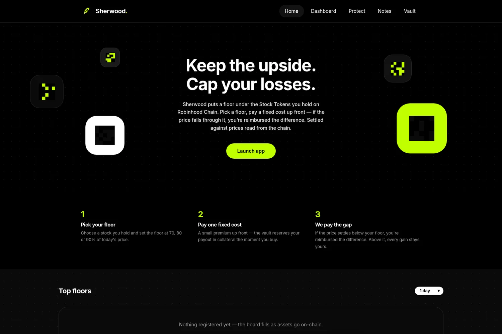
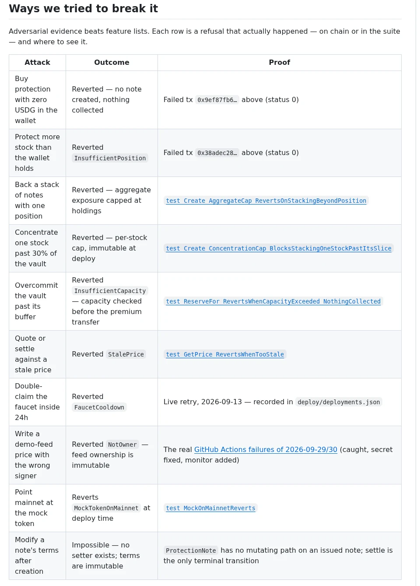

Case study · Manass Kusko
Sherwood
Buy a floor under a stock token, keep every gain above it, and settle against prices read from the chain. If the price never falls through, you simply keep your upside.

The problem
Stock tokens put equities on a chain, but holding one still exposes you to the whole downside. The tools that fix that are built for desks: strikes, expiries, Greeks, several positions to manage. For someone holding a token and wanting a floor under it, there was nothing simple that settled on-chain.
The constraints
A testnet demo means the honest parts are hard to fake. Chainlink publishes no tokenized-equity feeds on this chain, so prices there are fixtures — and the code had to be written so a fixture can never be mistaken for market data. Settlement also had to fail closed: an oracle that is stale must block a payout rather than quietly settle on frozen numbers.
What we built
A Protection Note is an immutable on-chain record: a floor, an amount, and an expiry. A vault of backers provides the collateral behind it, and buying protection reserves that collateral before any premium moves. At settlement the contract pays max(0, protectedValue − currentValue) on the shares you still hold — sell them mid-flight and that part is simply uncovered.

What was hard
The oracle gate took the most thought. This is an Arbitrum-based L2, and during a sequencer outage a feed's timestamp can look fresh while the price it carries predates the outage. The check reads Chainlink's uptime feed first, then a post-restart grace window, and treats a malformed round as "down". It is off where the chain publishes no uptime feed — which is the state of testnet 46630 today — and the README says so rather than implying cover that is not there.
Where it landed
195 contract tests and 33 frontend tests pass, both on every push. The five real Robinhood testnet stocks are wired, with live feed prices and a public faucet for test USDG. The contracts are unaudited and the testnet prices are fixtures — 195 tests pin the math and the guards, and no third party has reviewed them.